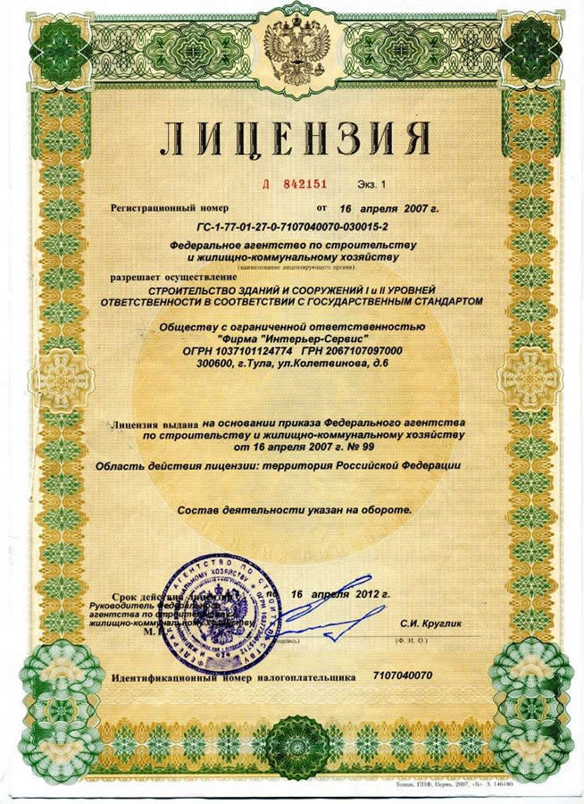

Нотариус
Обеспечение защиты прав и законных интересов граждан и юридических лиц путем совершения
предусмотренных законодательными актами нотариальных действий
от имени Российской Федерации

Нотариальные действия
- завещание
- договоры
- согласие
- заявление
- соглашение
- наследство
- распоряжение
Завещание - нотариально удостоверенное распоряжение гражданина относительно имущества на случай смерти. Правила наследования по завещанию, форма завещания и порядок его совершения регулируются положениями Гражданского кодекса РФ (глава 62).
Совершить завещание завещатель может только лично, передача полномочий по оформлению завещания представителю не допускается. Также законом не допускается совершение одного завещания сразу несколькими завещателями.
Для совершения завещания необходимо, чтобы гражданин, являющийся завещателем, обладал дееспособностью в полном объеме. Завещание по закону является односторонней сделкой, правовые последствия которой наступают не в момент оформления завещания, а только после открытия наследства.
Завещатель вправе самостоятельно решать, кому и в каких долях завещать свое имущество, кто из наследников по закону имеет права по завещанию, а кого лишить наследства. Причем завещатель не обязан указывать причину, по которой он лишил наследства наследника по закону. Завещатель может включить в завещание и другие распоряжения (в случаях, предусмотренных ГК РФ). Завещатель в любое время вправе изменить данное им распоряжение относительно имущества путем изменения отдельных пунктов содержания завещания или полной отмены завещания.
Распорядиться своим имуществом на случай смерти можно в пользу любых лиц, как наследников по закону, так и тех, которые не являются наследниками.
Завещатель имеет право не сообщать другим лицам (в том числе и наследникам) о своих действиях относительно завещания: его оформлении, содержании, отмене или изменении.
Гражданин имеет право оформить одно или несколько завещаний, распорядиться частью или всем своим имуществом (как уже принадлежащим ему, так и тем, которое он, возможно, приобретет в будущем).
Правовой договор - соглашение двух или нескольких сторон, заключаемое в соответствии с гражданским законодательством РФ. Понятие и условия договора, а также порядок заключения, изменения и расторжения правовых договоров предусмотрены Гражданским кодексом РФ (глава 27-29).
Суть договора - взаимное соглашение сторон договора об установлении, изменении и прекращении определенных гражданских прав и обязанностей. Сторонами договора могут являться как физические лица (граждане), так и юридические лица. Возможно заключение договора между гражданами, между юридическими лицами, а также между гражданином и организацией.
Обязательства, возникающие из правового договора, регулируются общими правилами ГК РФ об обязательствах (ст. 307-419), если иное не предусмотрено положениями ГК РФ и не противоречит характеру отдельных видов договоров. Физические и юридические лица свободны в своем решении о заключении договора. Закон запрещает любое понуждение к заключению договора, исключением является обязанность заключения договора, предусмотренная ГК РФ, иными законодательными актами или взятыми обязательствами.
Стороны договора вправе самостоятельно определять условия договора, за исключением тех случаев, когда закон устанавливает определенные правила включения соответствующих условий в договор (статья 422 ГК РФ). Законом разрешается заключение таких видов договоров, которых хоть и не предусмотрены ГК РФ и иными правовыми актами, но не противоречат смыслу и нормам гражданского законодательства.Договор между сторонами принято считать заключенным, если он составлен в предусмотренной законом форме, и стороны пришли к согласию по всем существенным условиям договора. С момента заключения договор вступает в законную силу и становится обязательным для исполнения для сторон, его заключивших. Условия договора по соглашению сторон могут применяться и к гражданско-правовым отношениям участников сделки, возникшим до заключения настоящего договора.
Законом или самим договором может быть предусмотрено условие, по которому обязательства по договору прекращаются по окончанию срока действия договора. Если данное условие в договоре не указано, то по закону срок действия договора прекращается с определенного в договоре момента окончания исполнения обязательств. По окончанию срока действия договора стороны продолжают нести ответственность за нарушение условий договора.
Согласие - разрешение лица на совершение определенного действия или ряда действий другим лицом; утвердительный ответ на просьбу кого-либо о чем-либо.
Отдельно понятие «согласие» в гражданском законодательстве не рассматривается, но необходимость получения от участников гражданского оборота составленного в предусмотренной законом форме согласия возникает из положений Гражданского, Семейного, Жилищного кодексов, а также иных законодательных актов.
Законом закреплена свобода граждан и юридических лиц в установлении, изменении и прекращении своих гражданских прав и обязанностей на основании сделок, не противоречащих российскому законодательству, однако в некоторых случаях существуют определенные пределы использования участниками своих прав.
Установление таких ограничений - гарантия законной защиты прав и интересов лиц, чьи права могут быть ущемлены при совершении гражданско-правовых сделок. Необходимость получения от других лиц (супругов, родителей, других членов семьи) согласия на заключение договора или на совершение иных законных действий как раз является одним из видов ограничений осуществления гражданских прав. Форма согласия может быть устной, простой письменной и нотариальной.
Заявление является обращением к гражданину, должностному лицу или организации с просьбой о совершении каких-либо действий. Также заявление может выражать предложение или жалобу.
В повседневной жизни, когда мы обращаемся к кому-либо с просьбой, мы используем устную неофициальную форму заявления. Но для отношений с органами государственной власти или должностными лицами различных организаций устной формы заявления недостаточно. Как правило, для выражения просьб и жалоб, адресованных государственным органам, учреждениям и организациям применяется официальная письменная форма заявления.
Официальное заявление - это письменное обращение лица или группы лиц, выражающее просьбу, предложение или жалобу, к руководству или должностному лицу компетентного органа или учреждения. По сути, официальное заявление - это документ, фиксирующий обращение лица по поводу осуществления его прав и защиты интересов и подлежащий рассмотрению в установленном законом порядке.
Соглашение - правовой акт, устанавливающий принципы регулирования гражданско-правовых отношений между сторонами.
Соглашение заключается по взаимному согласию двух или нескольких сторон. Соглашение, как средство регулирования правоотношений субъектов гражданского права, направлено на установление новых и изменение (прекращение) уже существующих прав и обязанностей. Одной из наиболее распространенных форм соглашений в гражданском праве является договор.
Сторонами соглашения могут быть любые субъекты гражданско-правовых отношений. Заключать соглашения между собой могут как физические, так и юридические лица.
Примером соглашения, заключенного между гражданином и юридическим лицом, является трудовое соглашение.
Наследством признается движимое и недвижимое имущество (в том числе имущественные права и обязанности), принадлежащее наследодателю на день его смерти.
Наследством не являются нематериальные блага, личные имущественные права, а также права и обязанности, связанные с личностью наследодателя (право на возмещение ущерба, причиненного здоровью гражданина, право на алименты, иные права и обязанности, наследование которых не допускается законодательством РФ).
Порядок и условия открытия наследства, способы и срок принятия наследства, получение и сроки выдачи свидетельства о наследстве, раздел наследства и выделение долей в наследстве, а также иные правила наследования регулируются Гражданским кодексом РФ (раздел V»Наследственное право») и иными законодательными актами.
Общий смысл термина «распоряжение» - действие, выражающее требование к определенному лицу исполнить что-либо.
Форма распоряжения может быть как устной, так и письменной. Письменная форма распоряжения - это распорядительный документ, содержащий требования, обязательные к исполнению лицом, которому они адресованы.
Формы и виды распоряжений зависят от сферы деятельности, способов достижения конкретной цели, методов исполнения и контроля. Как правило, оформлять распоряжение в той или иной отрасли необходимо по образцам и бланкам, установленным нормативными актами и инструкциями.
В административном праве распоряжениями признаются подзаконные акты, изданные исполнительным органом и не выходящие за рамки его компетенции. Данные виды распоряжений направлены на решение оперативных вопросов и касаются определенного круга конкретных исполнителей.
Документы и лицензии
- 


Новости
-
17.05.2018
Петербургский Международный Юридический Форум, май 2018
Участие в Питерском форуме-это тот момент в жизни, когда несколько дней вмещают в себя столько событий, впечатлений и эмоций, сколько и за месяц порой не случается! ...️
Читать далее... -
19.04.2018
Всероссийская научно-практическая конференция
«25 лет Основам законодательства Российской Федерации о нотариате»На юридическом факультете Санкт-Петербургского государственного университета состоялась Всероссийская научно-практическая конференция «25 лет Основам законодательства Российской Федерации о нотариате...
Читать далее... -
30.02.2018
Нотариальная палата Свердловской области провела открытый турнир по настольному теннису.
Спортивное состязание приурочено к 25-летию Палаты. Игра состоялась 3 февраля в клубе УГМК ...
Читать далее...